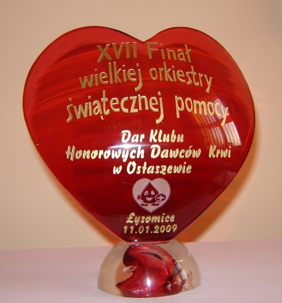

|
Serce ofiarowane przez Klub Honorowych Dawców Krwi w Ostaszewie
na licytacjê "XVII Fina³u Wielkiej Orkiestry ¦wiatecznej Pomocy"
naby³ Robert Ko¿uchowski

Galerie zdjêæ:
-1-
-2-
-3-
-4-
-5-
-6-
-7-
-8-
-9-
-10-
-11-
-12-
-13-
-14-
-15-
-16-
-17-
-18-
-19-
-20-
-21-
-22-
-Dyplomy
-Historia Klubu Honorowych Dawców Krwi Ko³a PCK w Ostaszewie
-Ceremonia³ wrêczenia sztandaru dla Klubu HDK PCK w Ostaszewie
-23-
-24-
-25-
-26-
-27-
-28-
-29-
-30-
-31-
-32-
-33-
-34-
-35-
-36-
|